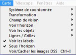

Menu Carte

Le menu Carte vous permet de configurer l'affichage des cartes selon vos besoins, rapidement et facilement. Si une configuration plus détaillée est nécessaire, consultez
Configuration → Carte, coordonnées
{kind=link}
Projection
Ici vous pouvez choir le système de coordonnées entre :
- Coordonnées Equatoriales,
- Coordonnées Azimuthales,
- Coordonnées Ecliptiques,
- Coordonnées Galactiques,
Ceci fonctionne comme le groupe de boutons-radio Système de coordonnée et les icônes du milieu de la barre d'outils de gauche.
Transformation
Si vou souhaitez retourner ou incliner la carte, vous pouvez choisir l'une des entrées du sous-menu.
Ceci fonctionne comme les icônes du bas de la barre d'outils de gauche.
Champ de vision
Ici vous pouvez modofier l'amplitude du champ de vision.
Ceci fonctionne comme les icônes du haut de la barre d'outils de droite.
Voir l'horizon
Si vous souhaitez voir la carte du point de vue d'un des quatre points cardinaux, choisissez dans le sous-menu
- North,
- South,
- West,
- East.
Ceci fonctionne comme les icônes du bas de la barre d'outils de droite.
Voir les objets
Ici vous pouvez choisir d'afficher ou non certaines classes d'objets en cochant les entrées du sous-menu :
- Voir les étoiles
- Voir les nébuleuses (et tous le s objets du ciel profond)
- Voir les images
- Voir les lignes
- Voir les planètes
- Voir les astéroïdes
- Voir les comètes
- Voir la voie lactée
Ceci fonctionne comme les icônes de gauche de la barre d'outils des objets.
Ces fonctions se situent également dans Liste des objets, Affichage lignes et dans les onglets du Sytème solaire.
Lignes / Grilles
Si vous voulez afficher ou non des grilles ou des lignes sur la carte, cochez les entrées correspondantes du sous-menu :
- Voir les grilles de coordonnées
- Ajouter la grille équatoriale
- Voir les figures des constellations
- Voir les limites des constellations
- Voir l'équateur galactique
- Voir l'écliptique
- Voir les marques (champs des oculaires)
Ceci fonctionne comme les icônes  et
et  de la barre d'outils des objets.
Ces entrées se trouvent aussi dans Affichage lignes et Affichage oculaires.
de la barre d'outils des objets.
Ces entrées se trouvent aussi dans Affichage lignes et Affichage oculaires.
Voir les labels
Cochez cette entrée pour voir toutes les étiquettes définies dans le menu :
Configuration → Affichage → Affichage étiquettes
Ceci fonctionne comme l'icône  dans la barre d'outils des objets.
dans la barre d'outils des objets.
Sous l'horizon
Cochez cette entrée pour voir les objets situés sous l'horizon.
Ceci fonctionne comme l'icône  dans la barre d'outils des objets.
dans la barre d'outils des objets.
Voir/Cacher les images DSS
Vous permet d'afficher ou non les images DSS sur la carte.